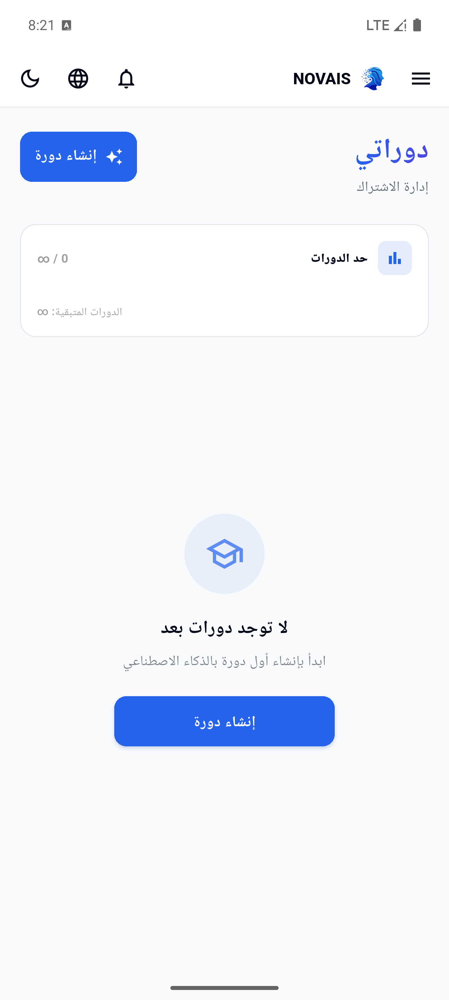

NOVAIS Graduation Defense Guide
Mariam & Kholoud - Mobile App
دليل دفاع لتطبيق Flutter: architecture، API client، auth، generation، payments، notifications، cache، والاختبارات.
1. دوركم في المشروع
دوركم بناء تطبيق Flutter يخدم نفس فكرة NOVAIS على الموبايل: login/register، dashboard، إنشاء محتوى، مشاهدة المحتوى، payment، notifications، profile، وتجربة قريبة من الويب لكن مناسبة للشاشة الصغيرة.
2. هدف الموبايل
الموبايل مش نسخة عرض فقط. هو client كامل لنفس الـ API: يجيب platform config والblueprints، ينشئ content، يحفظ course/document، يعرض المحتوى، يفتح payment checkout، ويعرض notifications.
3. Architecture
Entry
mobile/lib/main.dart يبدأ ProviderScope وNovaisApp.
Core
API client، auth provider، router، cache، models، platform config.
Features
create, course, payment, notifications, auth, dashboard.
Tests
widget tests، platform parity، API cache tests.
4. التقنيات المستخدمة
| تقنية | الدور |
|---|---|
| Flutter | تطبيق cross-platform بشاشة واحدة للكود. |
| Riverpod | State management للauth/config/notifications. |
| GoRouter | تعريف routes وguards. |
| Dio | HTTP client مع interceptors. |
| Flutter Secure Storage | تخزين JWT/device/user id بشكل أنسب للموبايل. |
| SharedPreferences | theme/locale/cache lightweight. |
5. Navigation
mobile/lib/core/router/app_router.dart يعرف routes زي login, dashboard, create, generating, course, quiz, certificate, payment, notifications. فيه redirect logic يحمي صفحات logged-in ويمنع دخول غير مصرح.
6. API Client
mobile/lib/core/api/api_client.dart هو نقطة الاتصال بالباك. Base URL الافتراضي http://10.0.2.2:8000/api مناسب لـ Android emulator. Dio يضيف interceptors للauth/device/cache.
- Auth interceptor يضيف Bearer token وAccept-Language.
- Device interceptor يولد UUID ويرسله في X-Device-ID.
- GET cache interceptor يخزن GET responses ويرجع cache عند فشل الشبكة.
- resolveMediaUrl يحول paths نسبية لروابط كاملة.
7. Auth
mobile/lib/core/auth/auth_provider.dart يدير login/register/logout/bootstrap. التوكن في secure storage، والauth state يحدد router redirects. لو API رجع 401، interceptor يمسح JWT.
8. Cache
mobile/lib/core/cache/api_cache.dart يستخدم SharedPreferences لتخزين JSON GET responses per user. ده يساعد التطبيق يعرض بيانات محفوظة لو النت قطع، خصوصا في موبايل.
9. Generation Flow
- create_screen.dart يعرض types/blueprints وfields.
- المستخدم يختار topic/language/level/options.
- generating_screen.dart يبعت POST /generate-course.
- لو رجع outline بدون id، الموبايل يحفظه عبر POST /courses.
- بعد الحفظ يفتح /course/:courseId.
10. Course/Content Viewer
course_screen.dart يعرض المحتوى المحفوظ، modules/lessons، ويفتح التفاصيل حسب بيانات الباك. الموبايل عنده models مثل course.dart للتعامل مع JSON بشكل typed.
11. Payments
الموبايل يعرف endpoints للـ payment checkout وoffline payments. Paymob checkout يظهر غالبا داخل WebView، والoffline flow يتيح طلب دفع يدوي. التفعيل النهائي يحصل في backend عن طريق webhook أو موافقة الأدمن، مش من الموبايل نفسه.
12. Notifications
في mobile providers/screens للإشعارات، والباك يدعم in-app notifications وتسجيل device. لازم نقول بصراحة إن native Android push عبر Firebase/FCM غير مكتمل بدون إعداد Firebase credentials/config، لكن inbox/in-app flow موجود.
13. Tests/Build
| Command | معناه |
|---|---|
| flutter pub get | تحميل dependencies. |
| flutter analyze | Static analysis للأخطاء والتحذيرات. |
| flutter test | تشغيل tests، منها flow وcache/parity. |
| flutter build apk --debug | إثبات إن APK بيتبني. |
14. ملفات لازم تبقوا حافظينها
mobile/pubspec.yaml، mobile/lib/main.dart، core/api/api_client.dart، core/api/endpoints.dart، core/auth/auth_provider.dart، core/router/app_router.dart، core/cache/api_cache.dart، features/create/create_screen.dart، features/create/generating_screen.dart، features/course/course_screen.dart، features/payment/pricing_screen.dart، features/notifications/notifications_screen.dart، mobile/test.
15. What To Say In Defense
Doctor May Ask
عشان cross-platform وسريع في بناء UI متسق للموبايل.
ينظم state/providers ويخلي auth/config/notifications قابلة للاختبار.
mobile/lib/main.dart.
core/router/app_router.dart.
redirect logic يعتمد على auth state والتوكن.
في ApiClient، وافتراضي emulator هو 10.0.2.2:8000/api.
Android emulator يستخدمها للوصول إلى localhost على جهاز التطوير.
Auth interceptor يقرأ JWT من secure storage ويضيف Bearer header.
interceptor يمسح JWT، والapp state يعيد المستخدم للlogin.
UUID محفوظ في secure storage ويتبعت للباك للتعرف على الجهاز.
تخزين responses للـ GET واستخدامها عند فشل الشبكة.
لا. فيه cache لبعض GET responses، لكن generation/payment يحتاجوا API.
create screen تجمع البيانات، generating screen تبعت للباك، ثم course screen تعرض الناتج.
لا. نفس Laravel API المستخدم في الويب والديسكتوب.
provider يطلب /content-blueprints ويبني UI/choices منها.
mobile/lib/models مثل course, user, app_notification, platform_config.
الموبايل يبدأ checkout/offline request، لكن backend هو اللي يفعّل subscription.
عشان الأمان. الدفع يتأكد من webhook أو موافقة الأدمن في الباك.
In-app notifications موجودة، لكن native push يحتاج Firebase setup غير مكتمل في docs.
flutter analyze.
flutter test.
flutter build apk --debug أو target محدد حسب البيئة.
اختبارات تتأكد إن الموبايل متوافق مع endpoints/flows الموجودة في المنصات الأخرى.
الـ Dio transformer يستخدم decoder آمن للتعامل مع JSON راجع من الباك.
resolveMediaUrl يحول path نسبي إلى URL كامل بناء على API origin.
بعض المصطلحات القديمة قد تظهر، وnative push/live payment production يحتاجوا إعداد/دليل إضافي.
عملنا client موبايل متكامل يستهلك نفس API ويقدم core flows بشكل مناسب للموبايل.
تفاصيل مملة مهمة للموبايل
طريقة التطوير
الموبايل اتطور بنفس منطق المشروع: Incremental. الأول auth/navigation، بعدين API client، بعدين create/generation، بعدين payment/notifications/cache/tests. مش Waterfall لأن features اتغيرت مع backend blueprints. ومش DevOps كامل؛ لكن فيه verification commands للموبايل: analyze/test/build.
Mobile Architecture Diagram
Mobile Routes بالتفصيل
| Route | Screen | وظيفته | Backend/Data |
|---|---|---|---|
| / | LandingScreen | صفحة عامة. | public content/config. |
| /signin | SignInScreen | دخول. | /auth/login -> users |
| /signup | SignUpScreen | تسجيل. | /auth/register -> users |
| /dashboard | HomeScreen | محتوى المستخدم. | /courses -> courses |
| /create | CreateScreen | اختيار blueprint والfields. | /content-blueprints |
| /generating | GeneratingScreen | طلب AI وحفظ الناتج. | /generate-course, /courses |
| /course/:courseId | CourseScreen | عرض المحتوى والدروس. | courses, lessons |
| /quiz/:courseId | QuizScreen | اختبار. | quizzes, quiz_questions |
| /certificate/:courseId | CertificateScreen | شهادة. | certificates |
| /pricing | PricingScreen | خطط ودفع. | plans, payments, offline_payment_requests |
| /notifications | NotificationsScreen | Inbox. | app_notifications |
| /profile | ProfileScreen | بيانات المستخدم. | users |
صورة حقيقية من Emulator

Dio Interceptors Sequence
Mobile Data Dictionary
| Model/Provider | يقابل إيه في الباك؟ | بيستخدم فين؟ |
|---|---|---|
| User | users | auth/profile/router guards. |
| Course | courses + lessons | dashboard/course screen/generation result. |
| ContentBlueprint | content_blueprints | create screen dynamic fields. |
| PlatformConfig | platform_settings | theme/features/payment/export visibility. |
| AppNotification | app_notifications | notifications screen. |
| ApiCache | client-side SharedPreferences | GET fallback لو النت قطع. |
Full Mobile Flow & Logic
- التطبيق يبدأ من main.dart داخل ProviderScope.
- Auth provider يعمل bootstrap: يقرأ token/user من secure storage.
- GoRouter يقرر يفتح landing/login ولا dashboard حسب auth state.
- ApiClient يضيف Authorization وAccept-Language وX-Device-ID لكل request.
- Dashboard يطلب profile/courses/usage ويعرض limits.
- CreateScreen يطلب blueprints ويعرض labels حسب النوع: course/chapter/question/phase.
- GeneratingScreen يرسل generation payload ويحفظ course لو رجع outline بدون id.
- CourseScreen يفلتر actions: لو document/exam/story يخفي quiz/certificate لأنهم course-specific.
- Lesson drawer يستخدم labels dynamic: Chapters للأسناد، Questions للبنوك، Phases للمشاريع.
- Payment flow يبدأ من pricing/checkout، لكن الاشتراك لا يتفعل إلا من backend webhook أو admin approval.
- Notifications screen يقرأ app_notifications ويميز read/unread، أما native push فمحتاج Firebase setup.
Payment على الموبايل Sequence
- PricingScreen يعرض plans من backend.
- المستخدم يختار خطة وطريقة دفع.
- لو Paymob: الموبايل يطلب checkout URL ثم يفتحه WebView.
- الموبايل لا يصدق الدفع بنفسه. Backend ينتظر webhook.
- لو offline: المستخدم يرسل رقم العملية/صورة proof.
- الأدمن يوافق من dashboard، والbackend يحدث subscription.
Notifications بالتفصيل
| جزء | وظيفته | حدوده |
|---|---|---|
| /notifications | جلب inbox. | يعتمد على login. |
| /notifications/{id}/read | تعليم إشعار كمقروء. | لازم يكون ملك المستخدم. |
| /notifications/read-all | تعليم الكل كمقروء. | in-app فقط. |
| /notification-devices | تسجيل جهاز وpush_token اختياري. | native FCM غير مكتمل بدون Firebase. |
Mobile UI Identity صورة توضيحية
Common Mistakes
- ما تقولوش إن التطبيق offline بالكامل؛ قولوا فيه GET cache فقط.
- ما تقولوش إن Firebase push جاهز بدون credentials.
- ما تخلطوش بين WebView checkout وبين تفعيل الاشتراك النهائي.
- احفظوا الفرق بين Secure Storage وSharedPreferences.